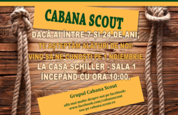

Ne vedem pe 1 noiembrie la Casa Schiller!

De la 1 noiembrie, lupișorii și temerarii Grupului Cabana Scout își vor desfășura activitățile la Casa Schiller! Cu această ocazie, îi așteptăm la înscriere pe toți cei care vor să ni se alăture!
AVENTURĂ ŞI EDUCAŢIE!
Începând cu data de 1 noiembrie, Grupul de Inișiativă “Cabana Scout” al Organizației Naționale “CERCETAŞII ROMÂNIEI” așteaptă copiii și tinerii cu vârste întra între 7 și 24 de ani la activitățile cultural-educative organizate în fiecare sâmbătă, la Casa de Cultură Friedrich Schiller.
Cercetășia este o metodă educativă non-formală, bazată pe o pedagogie perfecționată în peste 100 de ani de activitate. La cercetași, copiii și tinerii deprind toate acele competente și calități denumite generic EDUCAŢIE PENTRU VIAŢĂ. Cercetaşiiîşidesfăşoară activitatea pe grupe de vârstă, după cum urmează: LUPIŞORI (7-10 ani), TEMERARI (10-14 ani), EXPLORATORI (14-18 ani), SENIORI (18-24 de ani)
Participanţii la activităţi achită o taxă anuală – 100 de lei, din care 25 de lei la înscriere. De asemenea, aspiranţii îşi achiziţionează în timp echipamentele specifice (îmbrăcăminte, încălţăminte, uniformă, eşarfă, embleme). Taberele de vară şi alte ieşiri în natură se plătesc separat.
Pentru mai multe detalii ne puteți contacta pe mail [cabana@scout.ro], la telefon, pe pagina de facebook sau ne poți lăsa un mesaj prin formularul de contact și te căutăm noi!